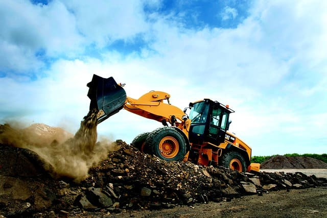

各種タイヤ販売
農業機械用タイヤ
トラクターや耕運機、スピードスプレイヤーやマニアスプレッダーなどのタイヤを幅広く取り扱っております。
環境、用途。使用頻度によって、適切なタイヤをご紹介させていただきます。
国産メーカー(FALKEN・BS)をはじめ、海外メーカーも多数ございます。

建設機械用タイヤ
建設機械の中には、ボブキャット・ミニホイールローダーなどの小さいものから、大型ダンプ、ラフテレーンクレーン、アスファルトフィニッシャーなどの大型の車両もございます。
同じ車両でも使用用途によって適したタイヤが存在します。
弊社ではそれぞれに適したタイヤを多数取り扱っております。
産業車両用タイヤ
弊社では、小型のフォークリフト用のタイヤから大型用のタイヤまで取り扱っております。
空気入りのエアータイヤ、空気を入れないノーパンクタイヤも取り扱いございます。ノーパンクタイヤにつきましては、ご自身で組み付ける作業が難しいため、貸ホイールを付けて販売することも可能です。
お問い合わせの際にはお申し付けくださいませ。
乗用車・トラック・バス用タイヤ
10種類以上のタイヤメーカーからお客様のご予算・ご要望に合わせたタイヤをご紹介させていただきます。
タイヤの情報等は全てタイヤの側面に刻印されておりますので、タイヤサイズをご確認後、お問い合わせくださいませ。
お問い合わせ
お仕事のご依頼やお見積もり等はお問い合わせにて承っております。